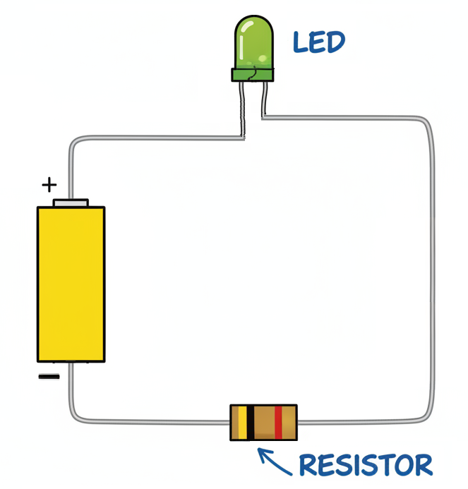
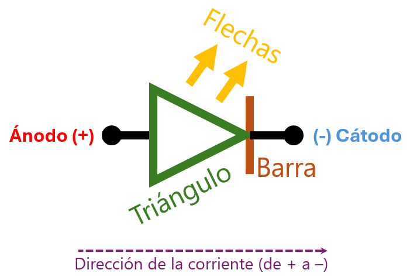
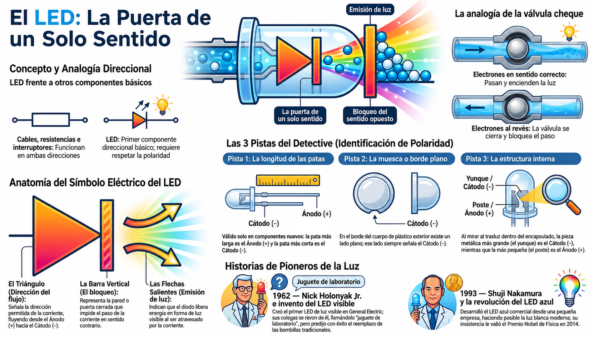

🚪 La puerta de un solo sentido
🚪 Una puerta que solo abre hacia un lado
Imagina una puerta que solo puedes empujar hacia un lado. Si intentas abrirla en el sentido contrario, se bloquea y no pasa nada. Puedes empujar todo lo que quieras, pero la puerta no cede.
Esa es la idea central del LED. A diferencia de una resistencia o un cable, que funcionan en cualquier dirección, el LED tiene una puerta de un solo sentido. Solo deja pasar la corriente si entra por donde debe.
💡 Un nombre con historia: la palabra LED viene del inglés Light Emitting Diode (Diodo Emisor de Luz). "Diodo" significa "dos caminos" en griego, pero paradójicamente describe un componente con un solo camino permitido. El LED es un tipo especial de diodo: uno que, al dejar pasar la corriente, emite luz.
📍 ¿Dónde hay LEDs a tu alrededor?
Antes de seguir, mira a tu alrededor. Es muy probable que estés rodeado de LEDs sin darte cuenta:
- El indicador de encendido del televisor (ese puntito rojo).
- El flash de la cámara de tu celular.
- Las luces del árbol de Navidad.
- El semáforo de la esquina.
- La linterna de la bicicleta.
- Los números luminosos del microondas.
- El control del ventilador, cuando indica que está encendido.
- Las luces de tu teclado o del mouse, si son de colores.
Todos ellos tienen la misma característica: una puerta que solo deja pasar la corriente en una dirección.
🚰 Una válvula cheque
En las tuberías de agua existen unas piezas llamadas válvulas cheque (también conocidas como antirretorno o de retención). Su función es permitir el paso del agua en un solo sentido, y bloquearlo al revés. Así evitan que el agua que ya pasó regrese por donde vino.
El LED funciona exactamente así, pero con electrones en lugar de agua. Si los electrones vienen por el lado correcto, pasan y encienden la luz. Si vienen por el lado incorrecto, la válvula se cierra y no pasa nada.

🔎 Comparación hidráulica: así como una válvula cheque protege el agua de un sistema, el LED protege al circuito de una conexión invertida. Y lo mejor: conectar el LED al revés no lo quema. Simplemente no enciende, como si estuviera desconectado. Si lo giras, funciona sin problemas. El único peligro real es conectarlo sin resistencia en la dirección correcta.
🔎 Comparación con otros componentes
El LED es un componente direccional: solo funciona en un sentido. Otros componentes básicos, como el cable, la resistencia o el interruptor, funcionan en cualquier dirección. Esa dirección obligatoria es lo que hace único al LED:
| Componente | ¿Funciona en cualquier dirección? |
|---|---|
| Cable | ✅ Sí |
| Resistencia | ✅ Sí |
| Interruptor | ✅ Sí |
| LED | ❌ No, solo en una |
Esa dirección obligatoria es lo que hace único al LED. Y por eso vale la pena estudiarlo con detalle.
🏠 ¿Dónde puedes ver una válvula cheque?
Las válvulas cheque están escondidas dentro de los aparatos y las tuberías de tu casa. No las ves a simple vista, pero están ahí, trabajando en silencio. Aquí van algunos lugares donde puedes encontrarlas:
- El tanque del inodoro. El mecanismo que deja salir el agua tiene una válvula que evita que regrese al tanque.
- La lavadora. En la manguera de desagüe hay una válvula antirretorno para que el agua sucia no se devuelva al electrodoméstico.
- El lavaplatos o lavadero. Igual que la lavadora: evita que el agua de la tubería regrese.
- La bomba de agua o el tanque en el techo. Si tu casa tiene bomba, hay una válvula cheque para que el agua no se devuelva cuando la bomba se apaga.
- El calentador de agua. Muchos tienen una válvula de seguridad en la entrada de agua fría.
🔍 ¿Quieres ver una de verdad? Pídele a un adulto que te muestre la manguera de desagüe de la lavadora. También puedes buscar en internet fotos de "válvula cheque lavadora" o "válvula antirretorno piscina". Vas a reconocer la forma: un cuerpo con dos extremos y, casi siempre, una flecha grabada que indica la dirección permitida del flujo.
💡 Detalle interesante: esa flecha grabada en la válvula es la misma idea que el triángulo del símbolo del LED. Los ingenieros siempre marcan la dirección de un componente que solo funciona en un sentido. A continuación vas a ver cómo se hace con el LED.
📐 El símbolo del LED: el mapa de la puerta
En los planos eléctricos, el LED se representa con un símbolo que cuenta su historia. Cada parte del símbolo significa algo:

- El triángulo: indica la dirección permitida de la corriente. La corriente solo puede fluir en el sentido que apunta el triángulo (del ánodo al cátodo).
- La barra vertical: representa la pared que bloquea el paso al revés. Es como la puerta cerrada que no cede.
- Las flechas hacia afuera: indican que el LED emite luz. Son las "señales de salida" que dicen: "aquí sale energía en forma de luz".
💡 Truco para recordar: el triángulo siempre apunta hacia la barra. Eso significa que la corriente entra por el lado del triángulo (ánodo) y sale por el lado de la barra (cátodo). Si lo conectas al revés, el triángulo "choca" contra la barra y no pasa nada.
Es la misma idea que la flecha grabada en las válvulas cheque: una marca visual que indica la dirección permitida del flujo. Los ingenieros siempre marcan la dirección de un componente que solo funciona en un sentido.
🌐 Luz viajando por el mundo
Los cables de cobre conducen la electricidad, pero tienen un límite: a distancias muy largas, las señales se debilitan y se pierden. Por eso los ingenieros inventaron la fibra óptica: en lugar de conducir electricidad por cobre, conduce luz por hilos de vidrio del grosor de un cabello.
La fibra óptica no es necesariamente más rápida que el cable de cobre, pero puede transportar muchísima más información al mismo tiempo y con menos pérdidas a largas distancias. Por eso se usa para internet y comunicaciones transoceánicas.
🌐 Dato curioso: la luz que viaja por un cable de fibra óptica va a casi 200,000 kilómetros por segundo. Eso significa que en un segundo podría darle la vuelta al mundo cinco veces.
🔍 Taller: El detective de polaridad
El LED tiene una puerta de un solo sentido, pero ¿cómo descubrir cuál es el lado correcto? Aquí es donde entra el papel del detective. Vamos a investigar varios LEDs para descubrir sus polaridades usando las tres pistas clásicas y, si tienes acceso, una herramienta profesional: el multímetro.
Lo más interesante: vas a poder identificarlo incluso si las patas están cortadas al mismo largo, como suele pasar con los LEDs reciclados de juguetes viejos.

🧰 Materiales
- Tres o cuatro LEDs (pueden ser reciclados de juguetes viejos).
- Una pila de 3V (CR2032) con su portapilas.
- Una resistencia de 220 Ω o 330 Ω.
- Cables caimán (o cables comunes).
- Cinta adhesiva (de papel o negra aislante). Sirve para sostener las patas del LED y los cables si no tienes cables caimán.
- Una lupa (opcional, pero ayuda mucho).
- Multímetro (opcional, si tienes acceso en el colegio).
🛠️ Procedimiento
- Reúne los LEDs. Si tienes LEDs nuevos, mira la pata más larga. Si tienes LEDs reciclados, revisa las tres pistas.
- Pista 1 — Pata larga. En un LED nuevo, la pata más larga es el ánodo (+). La más corta es el cátodo (−).
- Pista 2 — Muesca lateral. Mira el borde de plástico del LED. Uno de los lados es plano, no redondo. Ese lado plano siempre marca el cátodo (−).
- Pista 3 — El interior del LED. Sostén el LED contra una luz y mira a través del plástico. Verás dos piezas metálicas. La más grande (el yunque) es el cátodo (−). La más pequeña (el poste) es el ánodo (+).
- Verifica con el circuito. Monta el circuito: pila → resistencia → LED → pila. Prueba con el LED en una dirección y luego en la otra.
-
Dibuja esta tabla en tu bitácora y complétala para
cada LED:
LED Pata larga Muesca Interior ¿Encendió? 1 ☐ Sí / ☐ No ☐ Sí / ☐ No ☐ Sí / ☐ No ☐ Sí / ☐ No 2 ☐ Sí / ☐ No ☐ Sí / ☐ No ☐ Sí / ☐ No ☐ Sí / ☐ No 3 ☐ Sí / ☐ No ☐ Sí / ☐ No ☐ Sí / ☐ No ☐ Sí / ☐ No
🔬 Verificación con multímetro (opcional)
Si tienes acceso a un multímetro en el colegio, puedes hacer una verificación más precisa. El multímetro tiene un modo diodo que sirve exactamente para esto:
- Gira la perilla del multímetro hasta el símbolo del diodo.
- Toca con la punta roja una pata del LED, y con la punta negra la otra.
- Si el multímetro muestra un número pequeño (entre 1.5V y 3.5V), el LED está en la dirección correcta: la punta roja toca el ánodo (+).
- Si no muestra nada (o muestra un valor muy alto), el LED está al revés.
Compara los resultados del multímetro con lo que las tres pistas te dijeron. ¿Coinciden siempre?
🔍 ¿Qué descubriste? Comparando tus LEDs, ¿cuál pista coincidió siempre con el resultado del circuito? Esa es tu pista más confiable. Cuando encuentres un LED reciclado con patas cortadas, empieza por ahí.
❓ Pregunta guía
El LED funciona como una puerta de un solo sentido. ¿Qué otras cosas de tu vida diaria funcionan así? Piensa en puertas, torniquetes, válvulas o cualquier objeto que solo permita el paso en una dirección.
⚠️ Seguridad: trabaja siempre con 3V o 5V. Nunca uses voltajes de pared (110V o 220V). Siempre usa la resistencia de protección.
📜 De la risa al Premio Nobel
La pantalla de tu celular está iluminada por millones de LEDs. Detrás de cada uno de ellos hay una historia de científicos que insistieron cuando otros decían que era imposible. Aquí van dos de esos personajes.
💡 Nick Holonyak Jr. (1928–2022) — El inventor ridiculizado
Holonyak inventó el primer LED visible en 1962, mientras trabajaba en General Electric. Era hijo de inmigrantes ucranianos y creció en una familia humilde. Cuando presentó su invento, muchos colegas se rieron: decían que el LED era un "juguete de laboratorio", incapaz de reemplazar a las bombillas incandescentes.
Holonyak no se rindió. Predijo que algún día los LEDs reemplazarían a las bombillas. Murió en 2022, habiendo visto su predicción cumplirse: los LEDs están en semáforos, pantallas, linternas y en casi cualquier dispositivo moderno.
🔷 Shuji Nakamura — El que no tenía el currículum esperado
En la década de 1990, otro científico enfrentó un desafío aún más grande: crear un LED azul. Durante décadas, los grandes laboratorios de Japón, Estados Unidos y Europa habían fracasado. Era considerado imposible.
Shuji Nakamura trabajaba en una pequeña empresa desconocida (Nichia) y no tenía doctorado. Mientras los grandes laboratorios gastaban millones en investigaciones complicadas, él probó métodos poco convencionales. En 1993, logró el LED azul comercial. Su descubrimiento permitió crear LEDs blancos (combinando azul con fósforo amarillo), y con ellos la iluminación moderna.
En 2014, Nakamura recibió el Premio Nobel de Física por su trabajo. Su historia demuestra que no siempre gana quien tiene el mejor currículum, sino quien insiste cuando otros se rinden.
Los dos comparten un rasgo común: insistieron cuando otros decían que era imposible. Holonyak fue ridiculizado. Nakamura trabajaba en el anonimato. Juntos cambiaron la historia de la luz.
Fuentes: archivos históricos del Premio Nobel de Física, biografías de General Electric y Nichia Corporation.🗺️ Repaso visual

La puerta de un solo sentido
Dale play y en 6 minutos descubrirás:
- 🚪 El torniquete: por qué la corriente solo puede pasar en una dirección.
- 📐 El símbolo del LED: cómo leer el mapa de la puerta en un plano eléctrico.
- 🌐 Luz que viaja: cómo los datos de internet viajan por cables de fibra óptica.
- 🔷 Nakamura y el LED azul: la historia del científico que logró lo imposible.
💡 Escúchenlo en familia y comenten cuál de los cuatro temas les resultó más claro.